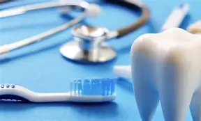
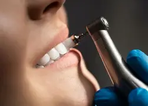
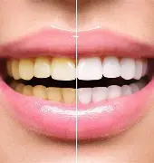
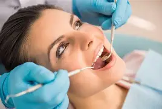
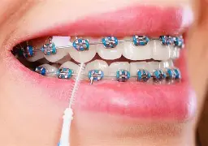
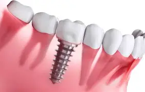
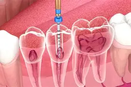

Seja Bem-vindo!
Clínica Odontológica Sorriso
Conheça os tratamentos oferecidos pela nossa clínica, realizados com dedicação, tecnologia e, principalmente, foco na saúde do seu sorriso!
Seja Bem-vindo!
Conheça os tratamentos oferecidos pela nossa clínica, realizados com dedicação, tecnologia e, principalmente, foco na saúde do seu sorriso!


Remoção de tártaro e placa bacteriana com aplicação de flúor e avaliação completa da saúde bucal, prevenindo cáries e doenças na gengiva.

Procedimento estético seguro e eficaz para remover manchas e amarelados, deixando os dentes visivelmente mais brancos e iluminados.

natural do dente, devolvendo a forma e a função.

Correção do alinhamento dos dentes e da mordida com aparelhos fixos ou alinhadores transparentes, garantindo estética e saúde funcional.

Substituição definitiva de dentes ausentes por pinos de titânio que funcionam como raízes naturais, restaurando o sorriso e a mastigação.

Remoção da polpa dental infectada para eliminar dores e salvar o dente original, evitando a necessidade de extração.
| Tratamento | Investimento Médio | Duração Estimada |
|---|---|---|
| Limpeza Preventiva | R$ 150 a R$ 300 | 45 minutos |
| Clareamento Dental | R$ 500 a R$ 1.200 | 1 a 3 sessões |
| Restauração Estética | R$ 180 a R$ 400 | 1 hora |
| Manutenção Ortodôntica | R$ 150 a R$ 300 (mensal) | 30 minutos |
| Implante Dentário | R$ 2.000 a R$ 4.500 | Algumas etapas/meses |
| Tratamento de Canal | R$ 600 a R$ 1.500 | 1 a 2 sessões |